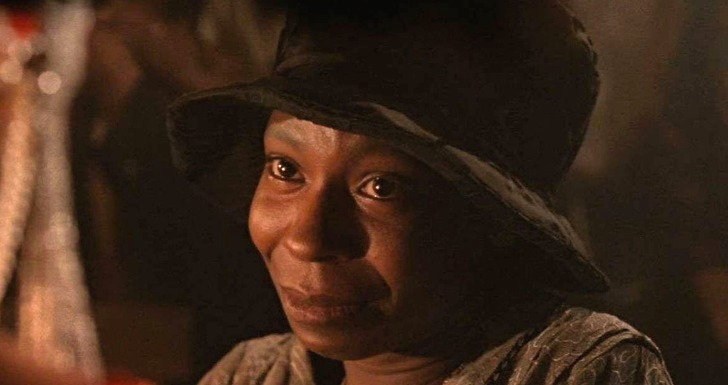

Quem é Oprah?
Oprah Winfrey é considerada uma das maiores apresentadoras de TV de todos os tempos. Além disso, ela atua como atriz, é influente em questões ligadas a flinatropia e uma empreendedora de sucesso. Com o dinheiro ganho em seus anos no show business, Oprah construiu um verdadeiro império multimídia, sendo que ela possui um canal de tv, um site, e duas revistas. Todos os produtos estampam ou fazem referência ao seu nome.
Oprah Gail Winfrey, conhecida por Oprah Winfrey, nasceu em Kosciusko, Mississipi, Estados Unidos, no dia 29 de janeiro de 1954. Sua mãe, Vernita Gail e seu pai, Vernon Winfrey, que na época servia nas Forças Armadas, não moravam juntos.
Infância e juventude
Oprah foi registrada por seu pai e criada pela avó materna que morava em um sítio na zona rural. Desde cedo, Oprah frequentava a igreja Batista e mostrava facilidade de decorar e recitar trechos da Bíblia. Quando estava com seis anos, sua mãe foi busca-la e foram morar em Milwaukee, Wisconsin. Com nove anos, Oprah passou a ser molestada por seu tio e seus primos adolescentes que foram morar em sua casa. Por ser ameaçada, não contava para sua mãe.
Oprah dedicou-se aos estudos e com 13 anos passou em um teste e ganhou uma bolsa de estudos para ingressar na Nicolet High School, uma escola pública da cidade de Milwaukee. Ao concluir o ensino fundamental, Oprah fugiu de casa e foi morar na casa de uma amiga. Com 14 anos, ficou grávida do seu primeiro namorado que a abandonou. Seu filho nasceu prematuro e não sobreviveu.
Oprah foi morar com seu pai em Nashville, no Tennessee e voltou a estudar quando mostrou habilidades para a oratória e para a recitação dramática. Foi considerada a aluna mais popular de sua escola.
Apesar da vida difícil, Oprah Winfrey começou a ter seus talentos de comunicação reconhecidos, quando ganhou o concurso de locução na Universidade Estadual do Tennessee, onde estudava Comunicação e Artes Cênicas.
Carreira de apresentadora
Em Nashville, Winfrey começou sua carreira como âncora num telejornal local. Em Baltimore, trabalhou no programa de entrevistas “People are Talking”, em 1978. Em 1983, Oprah mudou-se para Chicago e no ano seguinte liderou o “Talk Show AM Chicago” e logo conseguiu elevá-lo ao topo dos programas do canal WLS-TV.
Em 1986 o programa foi estendido para uma hora de duração com o nome “The Oprah Winfrey Show”. O programa de entrevistas marcou época e consagrou Oprah que conquistou vários prêmios Emmy. Durante 25 anos, Oprah Winfrey entrevistou diversas personalidades, entre elas, Barack Obama, Rihanna, Beyoncé e Michael Jackson que era quase impossível na época, mas foi ao ar ao vivo na mansão do cantor, quando 600 milhões de espectadores assistiram a entrevista.
Em 2008, a apresentadora e a Discovery Communications anunciaram os planos para transformar o canal Discovery Health no canal “The Oprah Winfrey Network (OWN)”, dedicado inteiramente a Oprah. Em 2011, depois de 26 anos no ar, Oprah apresentou seu último programa “The Oprah Winfrey Show”, na TV ABC. No dia 1 de janeiro de 2012, Oprah começou a apresentar seu novo programa, “Oprah’s Next Chapter”, quando entrevistou Steven Tyler, o vocalista da banda Aerosmith.
Diversas personalidades já passaram por seu programa, como a família de Whitney Houston, quando a entrevista foi assistida por 3,5 milhões de telespectadores em 11 de março de 2012. Alguns programas foram gravados na mansão da apresentadora em Montecito, California. No dia 7 de março de 2021, Oprah entrevistou o duque e a duquesa de Sussex, Harry e Meghan Markle, quando o casal falou sobre seu relacionamento com os membros da família real.
Cinema
Oprah Winfrey atuou pela primeira vez no cinema, em 1985, no filme de Steven Spielberg, “A Cor Púrpura”. No ano seguinte, ela foi indicada ao Oscar de melhora atriz coadjuvante, mas perdeu para Angelica Huston. Em 1986, ela atuou em Herança de Sangue ao lado de Matt Dillon. Atuou também em: Jogue a Mamãe do Trem (1987), Bem Amada (1998)Treze Homens e um Segredo (2007), O Mordomo da Casa Branca (2013), entre outros. Oprah emprestou sua voz para o ganso em A Menina e o Porquinho (2006), Bee Movie (2007), A Princesa e o Sapo (2009) da Walt Disney Animation Studios.
